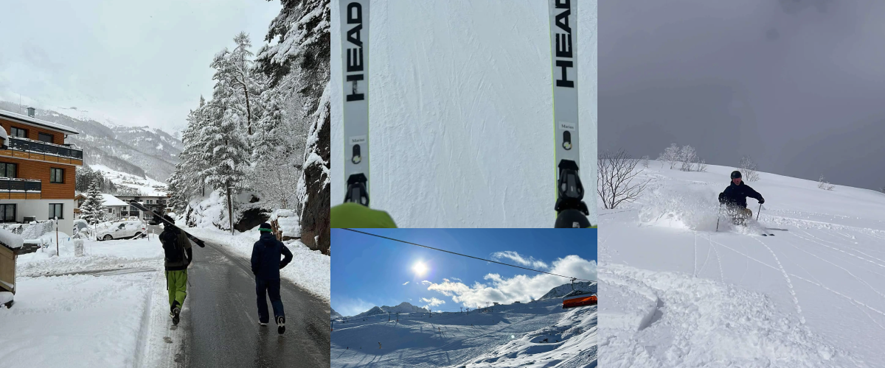
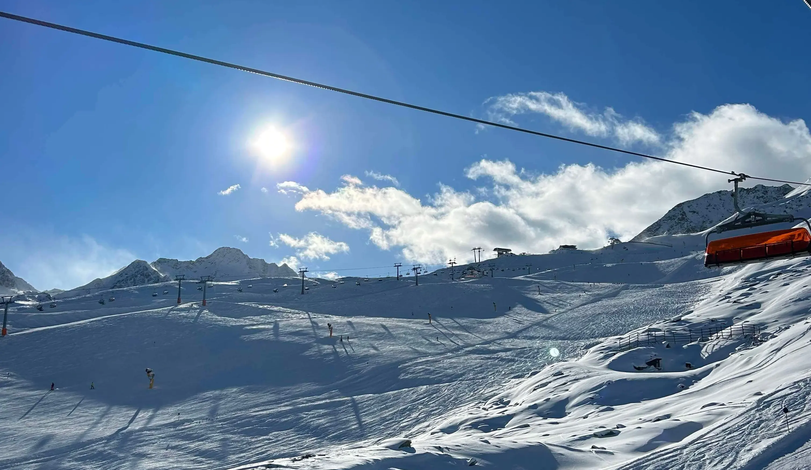
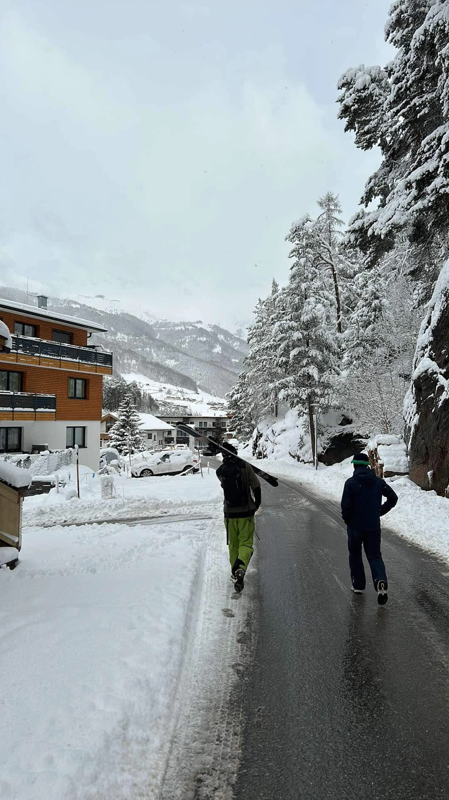
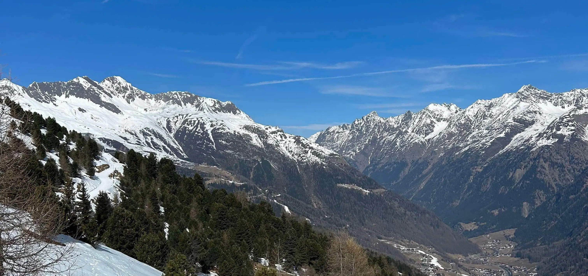
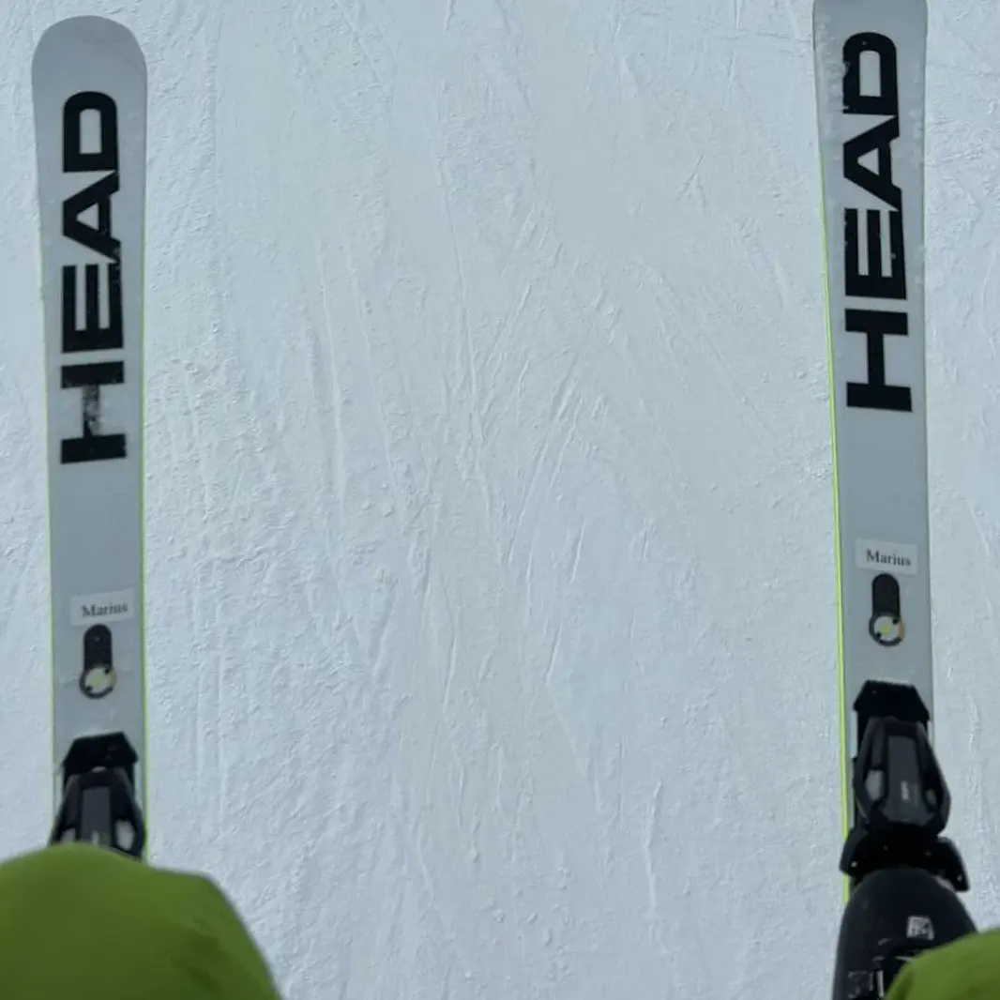
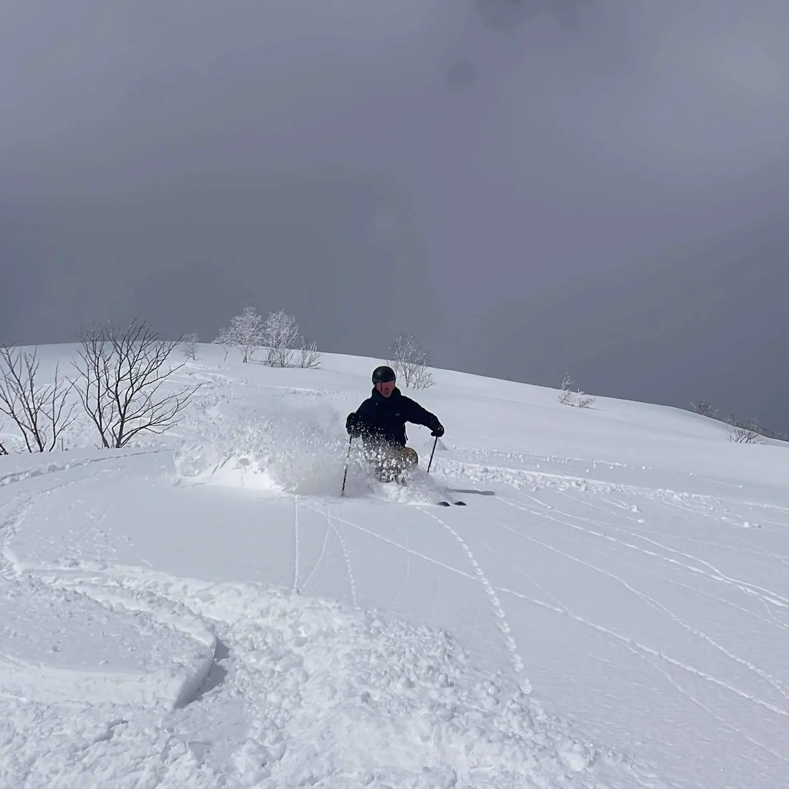

Ski guide
Både en sport og livstil
Gustav Boenæs har gennem sine oplevelser som skiguide udviklet en dyb passion for ski. For ham er ski mere end bare en sport – det er en livsstil. Fra de første snefyldte eventyr til de intense nedkørsler har Gustav opdaget, hvordan ski giver både frihed, udfordring og en unik forbindelse til naturen. På denne side deler han sin rejse, passion og viden om alt, der relaterer sig til ski – fra teknikker og udstyr til de bedste destinationer.

Omgivelserne spiller en stor rolle



